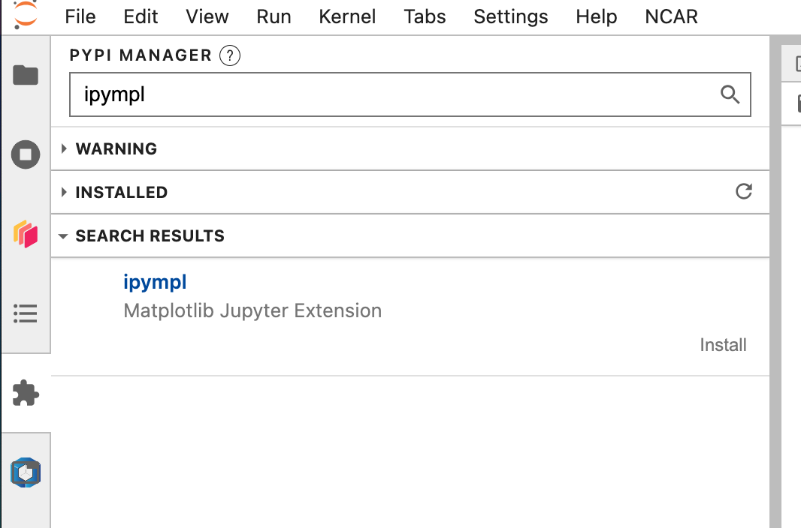

Troubleshooting
Below are some common issues that users may encounter while using visualCaseGen and their solutions. If the suggested solutions do not resolve the issue, or if you encounter a different problem, please open an issue on the visualCaseGen GitHub repository: https://github.com/ESMCI/visualCaseGen/issues/new
Commonly Encountered Issues
Error displaying widget: model not found: This message generally appears when a previously run GUI.ipynb notebook is re-opened. This error message doesn’t generally indicate a problem with the GUI, and should dissapear after running the cell with the from visualCaseGen import gui; gui code.
ModuleNotFoundError: No module named z3, ipyfilechooser, etc.: This error indicates that either the visualCaseGen` conda environment is not installed correctly, it was not chosen as the active environment, or it was not chosen as the kernel in the Jupyter notebook. To resolve this issue, ensure that the visualCaseGen conda environment is installed correctly and activated. If the issue persists, try restarting the Jupyter notebook kernel and selecting the visualCaseGen environment as the kernel.
Hanging Loadbar: If the loadbar hangs after clicking the Start button, click the Help button on the top right corner of the welcome dialog to see if any error messages are displayed. If so, submit an issue on the visualCaseGen GitHub repository with the error messages.
mom6_bathy notebook doesn’t open automatically: If the mom6_bathy notebook doesn’t open automatically, make sure that your browser allows pop-ups from visualCaseGen. If the notebook still doesn’t open, you can manually launch it by navigating to the mom6_bathy_notebooks/ directory in your visualCaseGen installation and opening the notebook corresponding to your custom grid.
The mom6_bathy interactive point-and-click feature is not working on JupyterHub. If you are experiencing issues with interactive features, such as point-and-click highlighting of individual cells, you may need to (re)install the ipympl extension. Steps to (re)install the ipympl extension: (1) Open JupyterHub. (2) Locate the Extension Manager tab on the left sidebar: Look for an icon that resembles a puzzle piece. (3) Search for ipympl in the search bar. (4) In the search results, click the Install button at the bottom right of the ipympl listing. (5) Refresh the page after installation to see the changes.
